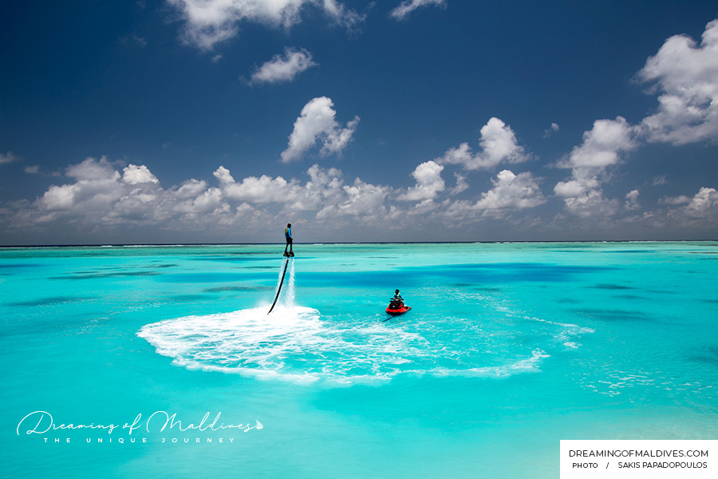

ILES DES MALDIVES

Les Maldives sont célèbres pour la beauté naturelle de ses atolls mélangeant le bleu turquoise de l'océan et les plages de sable blanc, accompagnés de températures élevées. Le climat des Maldives est idéal pour les sports nautiques et la faune sous marine rend l'archipel mondialement connu pour la pêche, la plongée sous-marine et la plongée libre.
Le bleu cristallin de l'Océan Indien se confond à l'horizon avec celui du ciel, tandis que l'absence presque totale d'êtres humains sur le rivage s'oppose à une véritable explosion de couleurs et de présences végétales et animales sur les fonds marins, peuplés d'une fantasmagorie d'algues, de coraux, de mollusques et d'autres formes de vie aquatique.
L'océan reste la caractéristique dominante du paysage, et ce surtout en raison des petites dimensions des îles de l'archipel ; aucune localité des Maldives ne se trouve à plus de quelques kilomètres de la mer, y compris sur ce que l'on pourrait appeler les îles principales. Il faut ajouter à cela que dans cet univers de récifs et de petites îles qui constituent les différents atolls, aucun relief collinaire ou hauteur ne limite le moins du monde la vue.
Quelques activités a faire aux Maldives
Un éparpillement d’îles paradisiaques, de récifs coralliens, et de couchers de soleil spectaculaires, les Maldives sont l’évasion ultime.
NAGER AVEC LES REQUINS

Visiter les Maldives sans voir les requins-baleines et les raies-manta serait dommage. Aux Maldives, plonger avec ces animaux marins est une pratique très répandue parmi les activités touristiques vendues par les resorts de plage. Un extraordinaire univers aquatique vous attend, dans un élément que l’on ne maîtrise pas : l’océan. On y retrouvera une population abondante de raies-manta, des poissons tropicaux multicolores et entre novembre et avril, l’impressionnant requin-baleine. Plonger dans l’océan à 15-20 mètres de profondeur permet de traverser les coraux, d’approcher les récifs pour se trouver proche des murènes, de poissons-perroquets, des raies et des mérous : un gigantesque aquarium sauf qu’ici, c’est vous l’étranger
LA PECHE NOCTURNE

Ce sont souvent les hôtels et resorts qui organisent les parties de pêche de nuit. Si vous ne savez que faire aux Maldives, pêcher à la tombée de la nuit sera une bonne idée d’activité après une journée de farniente sur la plage. Pourquoi ? Parce que les plus gros poissons sont plus faciles à ferrer le soir, lorsqu’ils sortent pour se nourrir, que durant la journée.
SPORT NAUTIQUE:FLYBOARD

Aux Maldives, les amateurs d'adrenaline auront également l'occasion de découvrir un sport nautique plus récent et unique: Le Flyboard. Cette activité extrême vous donne l'impression de marcher sur de l'eau et de vous sentir comme un super-héros. Préparez-vous à vivre une sensation extraordinaire dans un cadre paradisiaque. Cette activité est encore peu répandue aux Maldives. Cependant, de plus en plus d'hôtels la proposent.
Apres l'effort le reconfort
Apres une visite epuisante il ne reste plus qu'a aller faire le plein d'energie dans un restaurant chic, les maldives contienent egalement de nombreux restaurant chic sur des lieux avec des vues a couper le souffle comme le restaurant sous l'eau.
Envie d'un dîner pas comme les autres dans ce restaurant vous serrez pleinnement sastisfait